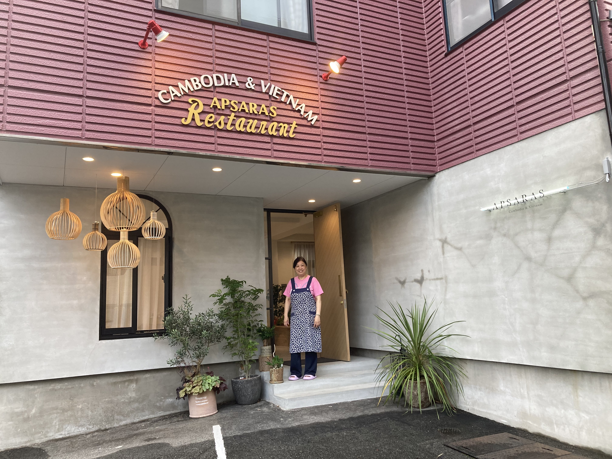

上一章
这是我在这里最喜欢的店。好像在德国那样，不是因为这里的味道而是人情味。这是家庭式经营的餐厅。刚来的时候我一般周六特训后去吃午餐，然后去paganini吃蛋糕，后来就平时去晚饭。这店叫アプサラス（apsaras柬埔寨语仙女的意思），是越南/柬埔寨料理。我刚来的时候忘记了是地图上还是随便遇到这个店。进去吃知道他们是柬埔寨华侨，祖籍广东，我们说粤语呢。那是很有爱的一家人，姓叶。第一次去知道他们经历过红色高棉已经想给他们做访问，直到2020年12月终于做起来。但访问太长，整理花时间，我断断续续后来2023年夏天叶先生因病进院，我就赶快写完。听了他们的故事，感觉历史如何改变一家人及后代的命运,访问在此。
他们1987（还是88？）到日本，90年代开餐厅。早期叶妈妈也帮忙，现在主要姐妹打理。她们对我很好，我生活上也会协助她们。她们还经常给我加菜呢。她们熬骨汤，总是给我一碗带有很多排骨的，这是VIP限定。有时候她们自己做了什么自己吃的，也会给我一份。她们还教了我她们店的料理做法，我掌握了人家的商业机密呢。由于他们是广东人，有时候做的菜和我家很像，例如罗汉果水，排骨黑豆汤等，我很有亲切感呢。

圆圆姐在门口。
厨房。

牛肉素面
第二次（2023年夏）访问时叶先生查地图。
这是他们2022年11月装修前（摄于同年9月）。

他们装修前的厨房。
我和她们姐妹两（圆圆和喜炎）。


她们客人送的越南画，用米做的。
2020年底访问时合影。

美食登场了。
午餐套餐，我第一次去吃的，在2017年12月。
我最喜欢的捞粉。
VIP限定的骨汤

柬埔寨宫廷甜品，她们教了我如何做，不容易的，一定要用慢火蒸。

bahn xeo越南薄饼，这个很难做的很脆的。她们做的好吃。

这是她们2022年11月装修后的新菜。bahn xeo是半分，她们私人给了我越南香菜，她们自己种的，味道非常刺激。这个在越南加鸭仔蛋吃（未孵化的鸭子），还可以配其他味重的香草，例如九层塔，鱼腥草叶（どくだみ）。这个面包是越南的法式面包bahn mi，配肝酱，特别好吃。这个面包是定做的，加了米粉，口感特别好，而且大小也是度身量做，放在口里刚刚好的。
她们家日本媳妇研发的かき氷（刨冰），越南咖啡味。因为她们这个甜品我知道原来日本的刨冰那么不一样，有些品质高的水越纯净，更细腻。
滨海，她们请我吃的。

她们请我吃的扬州炒饭，和香港的味道很像。
这几张就是我做的柬埔寨宫廷南瓜布丁。是不是和她们的很像？

终于到了最后一晚，我去她们那里晚饭。去之前到健身房最后一击，还跑的很快（1.6km+400m）*3间歇跑，10km/hr速度呢
我们的晚饭
我送给她们的礼物
圆圆姐送给我的香水
我们的料理
看看他们的老照片
圆圆姐难民营订婚宴
圆圆姐母亲一家（父母是圆圆姐的外公外婆）
圆圆和喜炎
难民营的法语班
圆圆姐爷爷奶奶
叶先生（好像于澳门）
吴哥窟
叶先生
圆圆姐姑姑结婚

圆圆姐在越南
圆圆姐在越南
越南圆圆姐四姐弟和亲戚
叶先生介绍他们的老照片。
叶先生介绍他们的老照片。
叶先生介绍他们的老照片。
叶先生跳舞
下一章